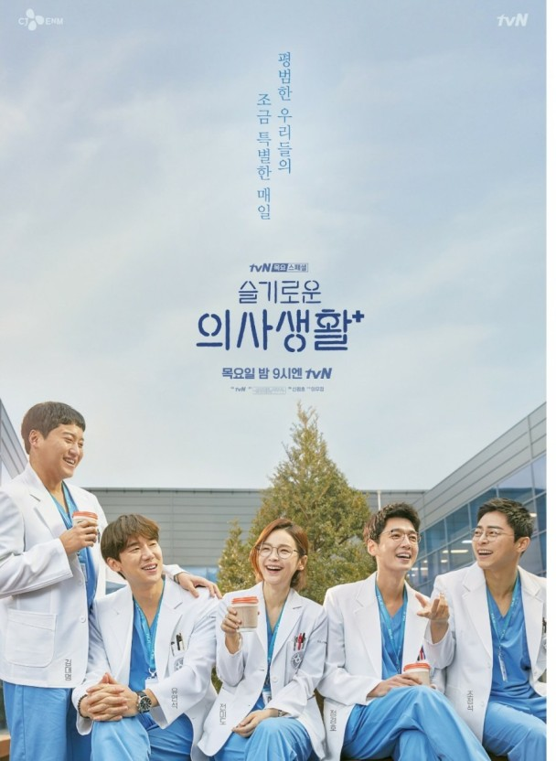
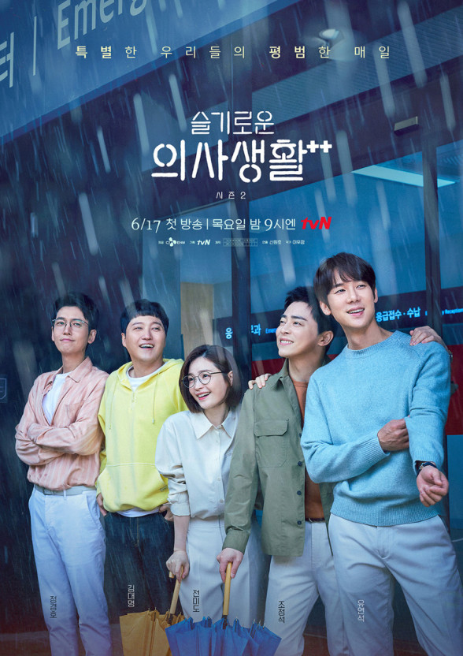
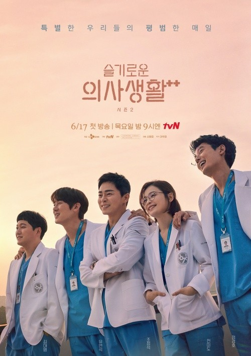

'슬기로운 의사생활'은 99학번 의대 동기 다섯명을 중심으로 병원에서 펼쳐지는 이야기를 그린 드라마입니다. 슬기로운 의사생활은 누군가는 태어나고 누군가는 삶을 끝내는, 인생의 축소판이라 불리는 병원에서 평범한 듯 특별한 하루하루를 살아가는 사람들과 눈빛만 봐도 알 수 있는 20년지기 친구들의 케미스토리를 담고 있습니다. 이 드라마의 가장 큰 특징은 주인공 5명의 밴드 활동이라고 볼 수 있다. 매 화 끝날 때 마다 하나 이상의 노래를 연주하며 끝나는 것을 확인 할 수 있다. 그들이 99학번이라는 설정인 만큼 그 시절의 노래를 연주하는 것을 볼 수 있다.
슬기로운 의사생활을 제작한 신원호 PD님은 자신의 드라마가 일상처럼 남아있는 드라마가 되길 바란다고 말할 정도로 슬기로운 의사생활은 그저 사람들 사는 이야기를 그렸다고 할 수 있습니다. 슬기로운 의사생활은 2020년도 시즌1을 끝내고 6월 17일을 시작으로 시즌2가 방영되고 있습니다. tvn에서 목요일 9시에 방송되 현재 최대 시청률 13.2%를 기록하며 비케이블임에도 불구하고 굉장히 높은 시청률을 기록하고 있습니다.